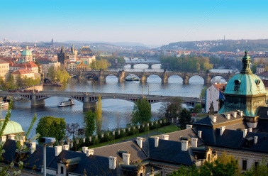

О проекте
Столица Прага является самым известным городским историческим музеем-заповедником Чешской Республики. С 1992 г. историческое ядро Праги, занимающее площадь 866 га, внесено в Список мирово- го культурного и природного наследия ЮНЕСКО.Столица Прага является самым известным городским историческим музеем-заповедником Чешской Республики.
С 1992 г. историческое ядро Праги, занимающее площадь 866 га, внесено в Список мирово- го культурного и природного наследия ЮНЕСКО.Столица Прага является самым известным городским историческим музеем-заповедником Чешской Республики. С 1992 г. Столица Прага является самым известным городским историческим музеем-заповедником.
С эпохи Средневековья Прага пользовалась репутацией одного из красивейших городов мира, ей присваивали такие эпитеты как золотая, стобашенная, корона мира, каменная мечта. На протяжении веков Праге выразили глубокое уважение знаменитые личности. Её красотой и благоустроенностью были очарованы: В. А. Моцарт, Л. ван Бетховен, Г. Аполлинер, П. И. Чайковский, Ф. М. Достоевский, О. Роден, О. Кокошка, королева Великобритании Елизавета II, Папа Ян Павел II и знаменитые личности современной политической и культурной жизни.